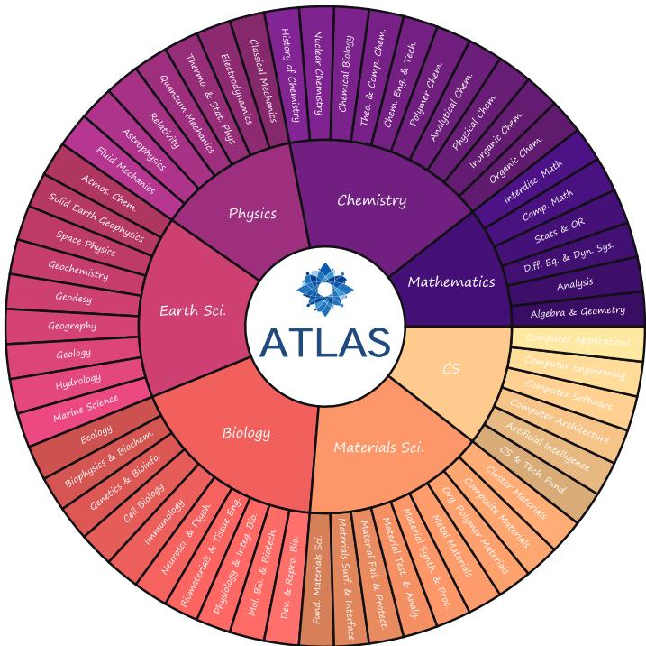
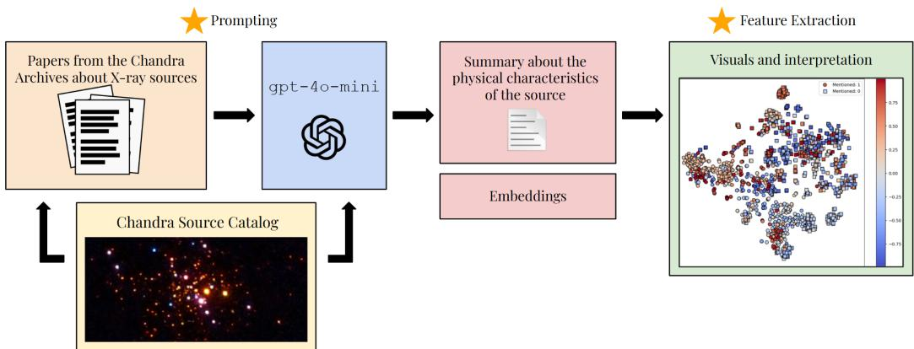
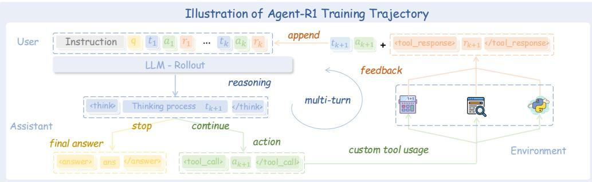
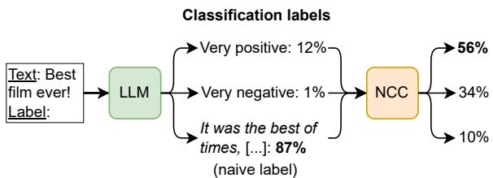
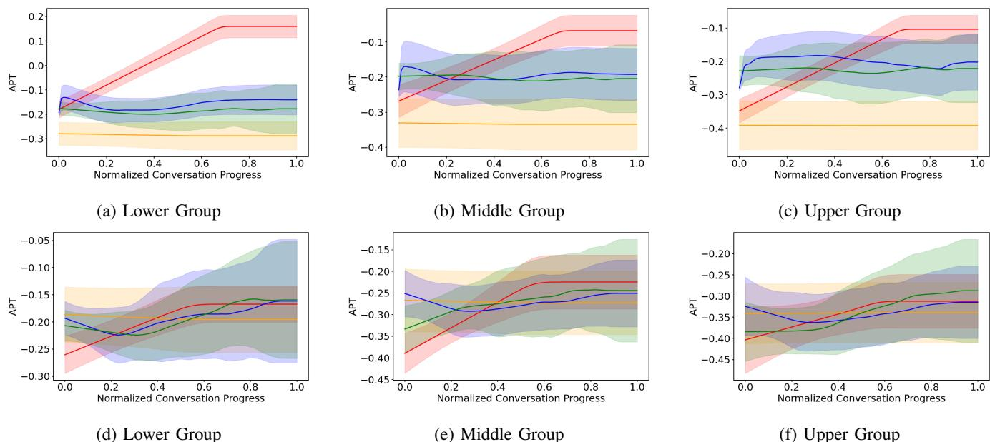

微观深度解读
为您精选了 6 篇高质量 AI 论文的深度解析
#1
科学推理
大型语言模型
跨学科评估
基准测试
专家评审
简介：本文提出了ATLAS，一个高难度、跨学科的科学推理评估基准，旨在解决现有大型语言模型（LLM）评估中的基准饱和和数据污染问题。ATLAS包含约800个原创问题，强调复杂推理和高保真度，采用严格的专家评审流程，能够有效区分不同模型的科学推理能力，并量化AI与人类专家之间的能力差距。

#2
大型语言模型
稀疏自编码器
天体物理学
提示工程
科学数据分析
简介：本文提出了一种利用大型语言模型（LLMs）结合稀疏自编码器（SAEs）的方法，旨在有效编码和推理天体物理学中的物理信息。研究探讨了提示工程对LLM编码能力的影响，并开发了专门的评估框架，以提升LLM在科学数据分析中的表现。实验结果表明，优化的提示显著提高了物理信息的提取准确性。

#3
强化学习
大语言模型
马尔可夫决策过程
多轮交互
代理决策
简介：本文提出了Agent-R1，一个模块化且灵活的训练框架，旨在有效应用强化学习（RL）于大语言模型（LLM）代理，解决其在复杂动态环境中的训练挑战。通过扩展马尔可夫决策过程（MDP），该框架系统化了多轮交互的状态、动作和奖励定义，并在多跳问答任务中验证了其显著提升代理决策和工具使用能力的有效性。

#4
标签长度偏差
归一化上下文标定
大语言模型
文本分类
多选问答
简介：本文提出了归一化上下文标定（NCC）方法，以解决大语言模型在处理多标记类标签时的标签长度偏差问题。NCC通过对多标记标签的概率进行归一化和上下文校准，显著提升了模型在文本分类和多选问答任务中的性能，F1分数提高了最高达10%。该方法增强了模型的鲁棒性，减少了对少样本示例选择的敏感性。

#5
大型语言模型
安全性评估
潜在表示
Jensen-Shannon分离度
实时监控
简介：本文提出了N-GLARE框架，旨在高效评估大型语言模型（LLM）的安全性，解决了传统红队方法的高成本和反馈延迟问题。N-GLARE通过分析模型的潜在表示，使用Jensen-Shannon分离度（JSS）指标，能够在不到1%的成本下复现传统评估的安全排名，实现实时诊断和动态监控。

#6
协作问答
大型语言模型
均值场动力学
随机效用模型
信息传播
简介：本文提出了一种结合均值场动力学（MFD）和随机效用模型（RUM）的理论框架，以分析和预测多大型语言模型（LLM）网络中的协作问答行为。该方法解决了LLM网络中信息传播和幻觉传播的问题，通过实验验证了网络结构、模型能力和通信策略对信息准确性的影响，为优化多LLM系统提供了理论基础和实证指导。